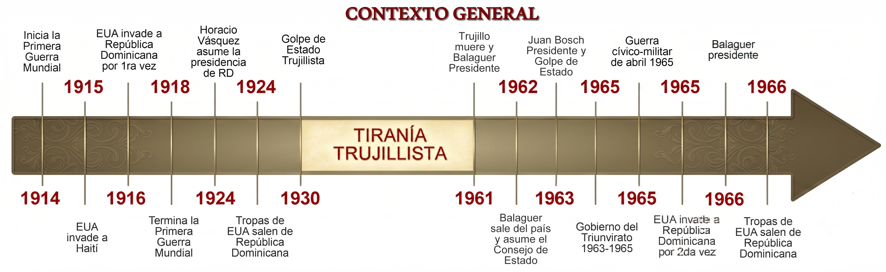

Falta imagenColoca aquí ins/001portadaL.png (laptop)
o ins/001portadaCv.png (celular, vertical)
o ins/001portadaCv.png (celular, vertical)
Historia de la República Dominicana

Selecciona una fecha para descubrir los eventos ocurridos o realiza una búsqueda.